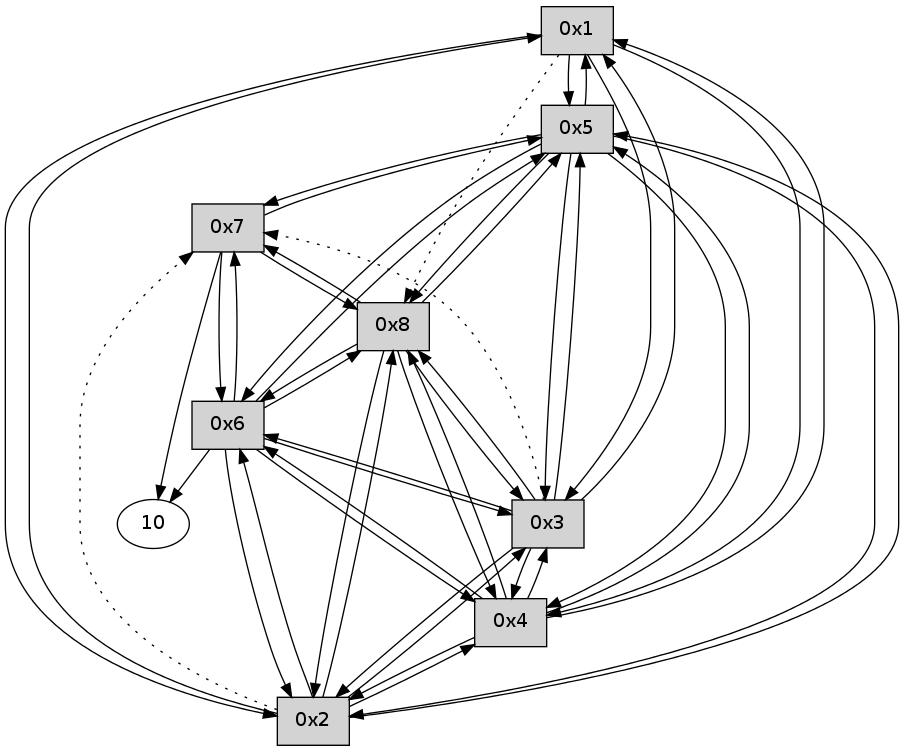

>> << IDX [start] -100 -25 -5 +0 +5 +25 +100 [105.004668951]
 Previous packets
----------------------------------------------------------------------
100.215714 beacon01(11f6) #0 coord=01,02,03,04,05,06,07,08,0a,09 cycle=688.0ms assoc
-- color-indic=0 64 80 bc
100.225877 beacon02(11f6) #0 coord=01,02,03,04,05,06,07,08,0a,09 cycle=688.0ms assoc 64 13 8d
100.235849 beacon03(11f6) #0 coord=01,02,03,04,05,06,07,08,0a,09 cycle=688.0ms assoc 64 69 c0
100.245849 beacon04(11f6) #0 coord=01,02,03,04,05,06,07,08,0a,09 cycle=688.0ms assoc 64 1e 2a
100.255851 beacon05(11f6) #0 coord=01,02,03,04,05,06,07,08,0a,09 cycle=688.0ms assoc 64 64 67
100.265850 beacon06(11f6) #0 coord=01,02,03,04,05,06,07,08,0a,09 cycle=688.0ms assoc 64 ea b0
100.275851 beacon07(11f6) #0 coord=01,02,03,04,05,06,07,08,0a,09 cycle=688.0ms assoc 64 90 fd
100.285854 beacon08(11f6) #0 coord=01,02,03,04,05,06,07,08,0a,09 cycle=688.0ms assoc 64 15 6c
100.381866 [Hello(1): seq=11 sym=5,3,2,4 asym=8 sysInfo= stat=5:10,0,0,0/3:10,0,0,0/2:8,0,0,0/4:8,0,0,0/8:10,0,0,0]
----------------------------------------------------------------------
101.003850 beacon01(11f6) #0 coord=01,02,03,04,05,06,07,08,0a,09 cycle=688.0ms assoc
-- color-indic=0 64 3c b9
101.014016 beacon02(11f6) #0 coord=01,02,03,04,05,06,07,08,0a,09 cycle=688.0ms assoc 64 af 88
101.023985 beacon03(11f6) #0 coord=01,02,03,04,05,06,07,08,0a,09 cycle=688.0ms assoc 64 d5 c5
101.033985 beacon04(11f6) #0 coord=01,02,03,04,05,06,07,08,0a,09 cycle=688.0ms assoc 64 a2 2f
101.043986 beacon05(11f6) #0 coord=01,02,03,04,05,06,07,08,0a,09 cycle=688.0ms assoc 64 d8 62
101.053985 beacon06(11f6) #0 coord=01,02,03,04,05,06,07,08,0a,09 cycle=688.0ms assoc 64 56 b5
101.063987 beacon07(11f6) #0 coord=01,02,03,04,05,06,07,08,0a,09 cycle=688.0ms assoc 64 2c f8
101.073989 beacon08(11f6) #0 coord=01,02,03,04,05,06,07,08,0a,09 cycle=688.0ms assoc 64 a9 69
101.118482 [Hello(5): seq=11 sym=1,2,7,6,3,8,4 sysInfo= stat=1:11,0,0,0/2:9,0,0,0/7:10,0,0,0/6:9,0,0,0/3:10,0,0,0/8:10,0,0,0/4:9,0,0,0]
101.151830 [Hello(4): seq=11 sym=1,2,5,6,3,8 sysInfo= stat=1:11,0,0,0/2:9,0,0,0/5:11,0,0,0/6:9,0,0,0/3:10,0,0,0/8:10,0,0,0]
101.155739 [Hello(7): seq=11 sym=10,5,6,8 sysInfo= stat=10:11,0,0,0/5:11,0,0,0/6:10,0,0,0/8:10,0,0,0]
101.169140 [Hello(8): seq=11 sym=2,7,5,6,3,4 sysInfo= stat=2:9,0,0,0/7:10,0,0,0/5:11,0,0,0/6:10,0,0,0/3:9,0,0,0/4:10,0,0,0]
101.172097 [Hello(6): seq=11 sym=10,7,5,3,8,4,2 sysInfo= stat=10:11,0,0,0/7:11,0,0,0/5:10,0,0,0/3:9,0,0,0/8:10,0,0,0/4:10,0,0,0/2:5,0,0,0]
101.181912 [Hello(2): seq=11 sym=1,5,3,8,4,6 asym=7 sysInfo= stat=1:11,0,0,0/5:11,0,0,0/3:10,0,0,0/8:11,0,0,0/4:10,0,0,0/6:8,0,0,0/7:11,0,0,0]
101.231915 [Hello(3): seq=11 sym=1,2,5,6,8,4 asym=7 sysInfo= stat=1:11,0,0,0/2:10,0,0,0/5:11,0,0,0/6:10,0,0,0/8:11,0,0,0/4:11,0,0,0/7:11,0,0,0]
----------------------------------------------------------------------
101.791985 beacon01(11f6) #0 coord=01,02,03,04,05,06,07,08,0a,09 cycle=688.0ms assoc
-- color-indic=0 64 e8 8c
101.802158 beacon02(11f6) #0 coord=01,02,03,04,05,06,07,08,0a,09 cycle=688.0ms assoc 64 7b bd
101.812121 beacon03(11f6) #0 coord=01,02,03,04,05,06,07,08,0a,09 cycle=688.0ms assoc 64 01 f0
101.822120 beacon04(11f6) #0 coord=01,02,03,04,05,06,07,08,0a,09 cycle=688.0ms assoc 64 76 1a
101.832121 beacon05(11f6) #0 coord=01,02,03,04,05,06,07,08,0a,09 cycle=688.0ms assoc 64 0c 57
101.842121 beacon06(11f6) #0 coord=01,02,03,04,05,06,07,08,0a,09 cycle=688.0ms assoc 64 82 80
101.852121 beacon07(11f6) #0 coord=01,02,03,04,05,06,07,08,0a,09 cycle=688.0ms assoc 64 f8 cd
101.862126 beacon08(11f6) #0 coord=01,02,03,04,05,06,07,08,0a,09 cycle=688.0ms assoc 64 7d 5c
101.945132 [Hello(1): seq=12 sym=5,3,2,4 asym=8 sysInfo= stat=5:11,0,0,0/3:11,0,0,0/2:9,0,0,0/4:9,0,0,0/8:11,0,0,0]
----------------------------------------------------------------------
102.580121 beacon01(11f6) #0 coord=01,02,03,04,05,06,07,08,0a,09 cycle=688.0ms assoc
-- color-indic=0 64 54 89
102.590279 beacon02(11f6) #0 coord=01,02,03,04,05,06,07,08,0a,09 cycle=688.0ms assoc 64 c7 b8
102.600255 beacon03(11f6) #0 coord=01,02,03,04,05,06,07,08,0a,09 cycle=688.0ms assoc 64 bd f5
102.610256 beacon04(11f6) #0 coord=01,02,03,04,05,06,07,08,0a,09 cycle=688.0ms assoc 64 ca 1f
102.620257 beacon05(11f6) #0 coord=01,02,03,04,05,06,07,08,0a,09 cycle=688.0ms assoc 64 b0 52
102.630257 beacon06(11f6) #0 coord=01,02,03,04,05,06,07,08,0a,09 cycle=688.0ms assoc 64 3e 85
102.640257 beacon07(11f6) #0 coord=01,02,03,04,05,06,07,08,0a,09 cycle=688.0ms assoc 64 44 c8
102.650261 beacon08(11f6) #0 coord=01,02,03,04,05,06,07,08,0a,09 cycle=688.0ms assoc 64 c1 59
102.686427 [Hello(6): seq=12 sym=10,7,5,3,8,4,2 sysInfo= stat=10:11,0,0,0/7:11,0,0,0/5:10,0,0,0/3:10,0,0,0/8:11,0,0,0/4:10,0,0,0/2:6,0,0,0]
102.707449 [Hello(3): seq=12 sym=1,2,5,6,8,4 asym=7 sysInfo= stat=1:12,0,0,0/2:10,0,0,0/5:11,0,0,0/6:11,0,0,0/8:11,0,0,0/4:11,0,0,0/7:11,0,0,0]
102.742483 [Hello(2): seq=12 sym=1,5,3,8,4,6 asym=7 sysInfo= stat=1:12,0,0,0/5:11,0,0,0/3:12,0,0,0/8:11,0,0,0/4:10,0,0,0/6:9,0,0,0/7:11,0,0,0]
102.773094 [Hello(8): seq=12 sym=2,7,5,6,3,4 sysInfo= stat=2:11,0,0,0/7:10,0,0,0/5:11,0,0,0/6:12,0,0,0/3:11,0,0,0/4:10,0,0,0]
102.797719 [Hello(5): seq=12 sym=1,2,7,6,3,8,4 sysInfo= stat=1:12,0,0,0/2:11,0,0,0/7:11,0,0,0/6:11,0,0,0/3:12,0,0,0/8:12,0,0,0/4:10,0,0,0]
102.801477 [Hello(4): seq=12 sym=1,2,5,6,3,8 sysInfo= stat=1:12,0,0,0/2:11,0,0,0/5:12,0,0,0/6:11,0,0,0/3:12,0,0,0/8:12,0,0,0]
102.829385 [Hello(7): seq=12 sym=10,5,6,8 sysInfo= stat=10:12,0,0,0/5:12,0,0,0/6:12,0,0,0/8:12,0,0,0]
----------------------------------------------------------------------
103.368259 beacon01(11f6) #0 coord=01,02,03,04,05,06,07,08,0a,09 cycle=688.0ms assoc
-- color-indic=0 64 90 87
103.378434 beacon02(11f6) #0 coord=01,02,03,04,05,06,07,08,0a,09 cycle=688.0ms assoc 64 03 b6
103.388394 beacon03(11f6) #0 coord=01,02,03,04,05,06,07,08,0a,09 cycle=688.0ms assoc 64 79 fb
103.398394 beacon04(11f6) #0 coord=01,02,03,04,05,06,07,08,0a,09 cycle=688.0ms assoc 64 0e 11
103.408395 beacon05(11f6) #0 coord=01,02,03,04,05,06,07,08,0a,09 cycle=688.0ms assoc 64 74 5c
103.418395 beacon06(11f6) #0 coord=01,02,03,04,05,06,07,08,0a,09 cycle=688.0ms assoc 64 fa 8b
103.428394 beacon07(11f6) #0 coord=01,02,03,04,05,06,07,08,0a,09 cycle=688.0ms assoc 64 80 c6
103.438401 beacon08(11f6) #0 coord=01,02,03,04,05,06,07,08,0a,09 cycle=688.0ms assoc 64 05 57
103.509114 [Hello(1): seq=13 sym=5,3,2,4 asym=8 sysInfo= stat=5:12,0,0,0/3:12,0,0,0/2:10,0,0,0/4:10,0,0,0/8:12,0,0,0]
----------------------------------------------------------------------
104.156394 beacon01(11f6) #0 coord=01,02,03,04,05,06,07,08,0a,09 cycle=688.0ms assoc
-- color-indic=0 64 2c 82
104.166569 beacon02(11f6) #0 coord=01,02,03,04,05,06,07,08,0a,09 cycle=688.0ms assoc 64 bf b3
104.176528 beacon03(11f6) #0 coord=01,02,03,04,05,06,07,08,0a,09 cycle=688.0ms assoc 64 c5 fe
104.186530 beacon04(11f6) #0 coord=01,02,03,04,05,06,07,08,0a,09 cycle=688.0ms assoc 64 b2 14
104.196529 beacon05(11f6) #0 coord=01,02,03,04,05,06,07,08,0a,09 cycle=688.0ms assoc 64 c8 59
104.206530 beacon06(11f6) #0 coord=01,02,03,04,05,06,07,08,0a,09 cycle=688.0ms assoc 64 46 8e
104.216530 beacon07(11f6) #0 coord=01,02,03,04,05,06,07,08,0a,09 cycle=688.0ms assoc 64 3c c3
104.226533 beacon08(11f6) #0 coord=01,02,03,04,05,06,07,08,0a,09 cycle=688.0ms assoc 64 b9 52
104.264491 [Hello(2): seq=13 sym=1,5,3,8,4,6 asym=7 sysInfo= stat=1:13,0,0,0/5:12,0,0,0/3:12,0,0,0/8:12,0,0,0/4:11,0,0,0/6:9,0,0,0/7:12,0,0,0]
104.289712 [Hello(5): seq=13 sym=1,2,7,6,3,8,4 sysInfo= stat=1:13,0,0,0/2:12,0,0,0/7:12,0,0,0/6:11,0,0,0/3:12,0,0,0/8:12,0,0,0/4:11,0,0,0]
104.338005 [Hello(8): seq=13 sym=2,7,5,6,3,4 sysInfo= stat=2:12,0,0,0/7:12,0,0,0/5:12,0,0,0/6:12,0,0,0/3:11,0,0,0/4:11,0,0,0]
104.341915 [Hello(4): seq=13 sym=1,2,5,6,3,8 sysInfo= stat=1:13,0,0,0/2:12,0,0,0/5:12,0,0,0/6:11,0,0,0/3:12,0,0,0/8:12,0,0,0]
104.380771 [Hello(6): seq=13 sym=10,7,5,3,8,4,2 sysInfo= stat=10:13,0,0,0/7:13,0,0,0/5:11,0,0,0/3:11,0,0,0/8:13,0,0,0/4:12,0,0,0/2:7,0,0,0]
104.400064 [Hello(3): seq=13 sym=1,2,5,6,8,4 asym=7 sysInfo= stat=1:13,0,0,0/2:12,0,0,0/5:12,0,0,0/6:12,0,0,0/8:13,0,0,0/4:13,0,0,0/7:12,0,0,0]
----------------------------------------------------------------------
104.944530 beacon01(11f6) #0 coord=01,02,03,04,05,06,07,08,0a,09 cycle=688.0ms assoc
-- color-indic=0 64 18 9a
104.954699 beacon02(11f6) #0 coord=01,02,03,04,05,06,07,08,0a,09 cycle=688.0ms assoc 64 8b ab
104.964664 beacon03(11f6) #0 coord=01,02,03,04,05,06,07,08,0a,09 cycle=688.0ms assoc 64 f1 e6
104.974665 beacon04(11f6) #0 coord=01,02,03,04,05,06,07,08,0a,09 cycle=688.0ms assoc 64 86 0c
104.984666 beacon05(11f6) #0 coord=01,02,03,04,05,06,07,08,0a,09 cycle=688.0ms assoc 64 fc 41
104.994666 beacon06(11f6) #0 coord=01,02,03,04,05,06,07,08,0a,09 cycle=688.0ms assoc 64 72 96